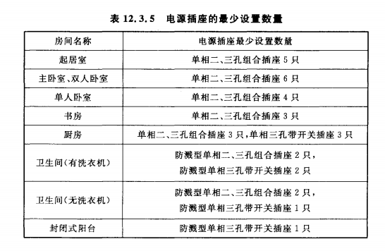

检索时间：2026-08-06 | 数据来源：IMA知识库「设计工程规范库」(ID: 7415660309141938)

注：该表来自用户提供的规范原文截图（表号 12.3.5），直观给出各功能空间电源插座的最低配置数量。规范编号待进一步确认，可能为某本住宅/全装修设计标准或地方图审要点。
电源插座数量：
| 房间部位 | 电源插座最少组数 | 备注 |
|---|---|---|
| 卧室 | ≥ 2 组 | — |
| 起居室（厅） | ≥ 3 组 | — |
| 厨房 | ≥ 2 组 | 应采用防溅水型插座 |
来源：《住宅设计规范》GB 50096-2011 第8章 建筑设备 第8.7节 电气 | 实施日期：2012-08-01
每套住宅用电负荷不应小于 2.5kW。
住宅供电系统应采用TT、TN-C-S或TN-S接地方式，并进行等电位连接。进户线截面不应小于10mm²，分支回路截面不应小于2.5mm²。
住宅建筑电气设计应满足用电负荷要求，电气线路的敷设应安全可靠。电气设备应采用安全型产品，配电系统应合理分配负荷。
来源：《住宅建筑规范》GB 50368-2005 第8章 设备与设施 | 实施日期：2006-03-01
住宅各功能空间应设置能够满足使用需求的电源插座和开关，并应符合下列规定：
1 电源插座的数量不应少于现行国家标准《住宅设计规范》GB 50096 的规定；
2 当电源插座底边距地面1.80m及以下时，应选用带安全门的产品；
3 厨房宜预留增添设施、设备的电源插座位置，电源插座距水槽边缘的水平距离宜大于600mm；
4 洗衣机、电热水器、空调和厨房设备宜选用开关型插座；
5 可能被溅水的电源插座应选用防护等级不低于IP54的防溅水型插座；
6 除照明、壁挂空调电源插座外，所有电源插座配电回路应设置剩余电流动作保护装置。
来源：《住宅室内装饰装修设计规范》JGJ 367-2015 第10.3节 电气 | 实施日期：2016-03-01
照明回路和插座回路应分路设计。按人数和桌椅布置的办公室内插座数量应满足每人不少于一个单相三孔和一个单相二孔的插座两组。
| 要求项 | 具体内容 |
|---|---|
| 回路设计 | 照明回路与插座回路必须分路设计 |
| 插座数量（每人） | ≥ 1个单相三孔插座 + 1个单相二孔插座（共两组） |
| 布置依据 | 按人数和桌椅布置确定 |
来源：《办公建筑设计标准》JGJ/T 67-2019 第7章 建筑设备 第7.3节 建筑电气 | 实施日期：2020-03-01
照明设计应符合 GB 50034 规定，应采用高效节能光源。
汽车停放场地应设置或预留电动汽车充电装置配电设施。
建筑内部装修设计中，开关、插座等不应直接安装在低于B1级的装修材料上。当必须安装在B1级以下材料上时，应采取隔热、散热等防火保护措施。
来源：《建筑内部装修设计防火规范》GB 50222-2017 | 实施日期：2018-04-01
建筑防火通用规范对电气部分要求：用电设备应采用专用的供电回路，消防用电设备应采用专用的供电回路，且不得接入其他非消防用电设备。
来源：《建筑防火通用规范》GB 55037-2022 第10章 电气 | 实施日期：2023-06-01
8.7.1 每套住宅的用电负荷不应小于2.5kW。 8.7.2 住宅供电系统的设计，应符合下列规定： 1 应采用TT、TN-C-S或TN-S接地方式，并进行等电位连接； 2 电气线路应采用符合安全和防火要求的敷设方式配线； 3 住宅套内的电气管线应采用穿管暗敷设方式配线； 4 进户线截面不应小于10mm²，分支回路截面不应小于2.5mm²。 8.7.6 电源插座的数量不应少于表8.7.6的规定： 卧室 ≥ 2组 起居室(厅) ≥ 3组 厨房 ≥ 2组（防溅水型） 卫生间 ≥ 1组（防溅水型） 布置洗衣机、冰箱、排油烟机、排风机及空调器等处
注：条文摘要来源于知识库条文级摘要笔记，正式设计应以规范原文为准
7.3.4 照明回路和插座回路应分路设计。按人数和桌椅布置 的办公室内插座数量应满足每人不少于一个单相三孔和 一个单相二孔的插座两组。 7.3.5 照明设计应符合现行国家标准《建筑照明设计标准》 GB 50034的有关规定，并应采用高效节能光源。 7.3.10 汽车停放场地应设置或预留电动汽车充电装置配电 设施。
注：条文摘要来源于知识库条文级摘要笔记，正式设计应以规范原文为准
| 规范编号 | 规范名称 | 关键条文 | 状态 |
|---|---|---|---|
| GB 50096-2011 | 住宅设计规范 | 第8.7.1条、第8.7.2条、第8.7.6条 | 现行 |
| GB 50368-2005 | 住宅建筑规范 | 第8.5条 电气 | 现行 |
| JGJ 367-2015 | 住宅室内装饰装修设计规范 | 第10.3.3条 电源插座和开关 | 现行 |
| JGJ/T 67-2019 | 办公建筑设计标准 | 第7.3.4条、第7.3.5条、第7.3.10条 | 现行 |
| GB 50222-2017 | 建筑内部装修设计防火规范 | 插座安装材料防火要求 | 现行 |
| GB 55037-2022 | 建筑防火通用规范 | 第10章 电气（全文强制性） | 现行 |